AI for Medicine and Science
AI systems that accelerate biomedical discovery, disease understanding, and clinical translation.
We develop scalable, multisensory, and generative AI that translates scientific insight into practical tools for medicine and health.
AI systems that accelerate biomedical discovery, disease understanding, and clinical translation.
General-purpose models for wearables, sleep, language, sensors, imaging, and multimodal health data.
AI that helps people understand, reason, and improve individual physiology, behavior, disease trajectories, and interventions.
Interactive AI systems that reason with people, tools, health data, evidence, and scientific workflows.
Generative and physical AI models for human signals, body dynamics, interventions, and personal health digital twins.
Fair, robust, interpretable, transparent, and safe AI, especially for high-stakes medical and health settings.
We develop AI methods that turn complex health data into clinical insight and scientific discovery. Our work studies early diagnosis, disease severity, progression, phenotypes, and treatment response across neurological disease, sleep, mental health, cardiometabolic health, and clinical imaging.
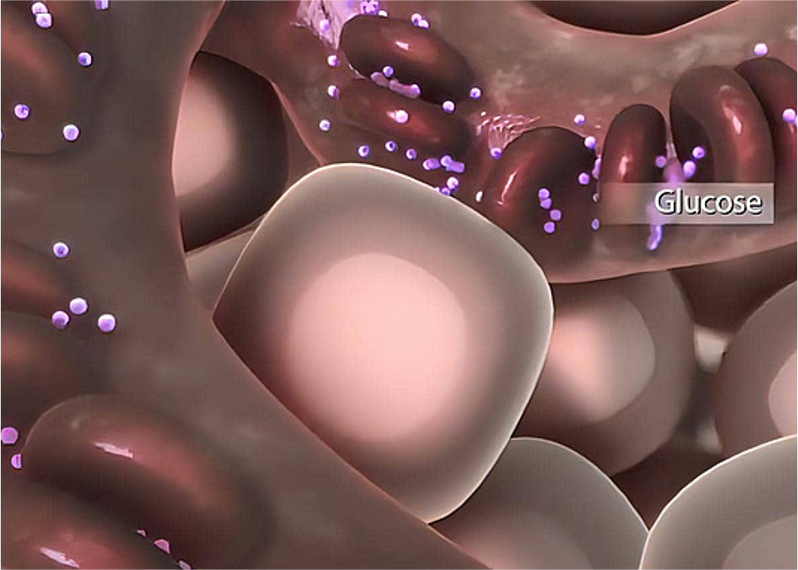
Predicting insulin resistance from wearables and routine blood biomarkers.
Nature 2026Passive disease detection and assessment from nocturnal breathing signals.
Nature Medicine 2022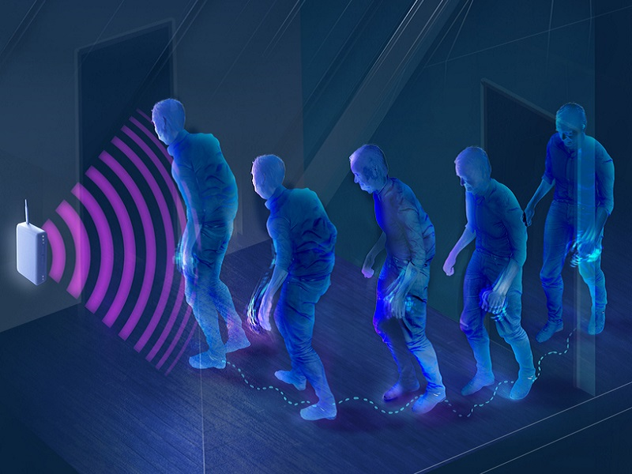
Tracking gait and medication response at home using radio-wave sensing.
Science Translational Medicine 2022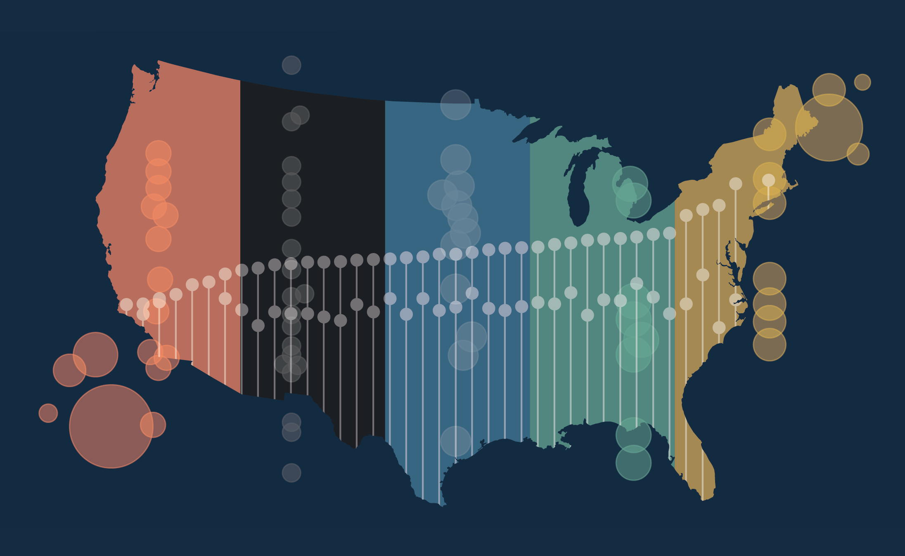
Auditing expert-level foundation models for disease detection across populations.
Science Advances 2025We build general-purpose models that learn from heterogeneous multisensory signals of humans, including wearable sensors, sleep, motion, glucose, physiology, imaging, natural language, and more. These models support transfer across tasks, devices, cohorts, time, and clinical settings.

Natural-language intelligence for human sleep from physiological time series.
ICML 2026 Spotlight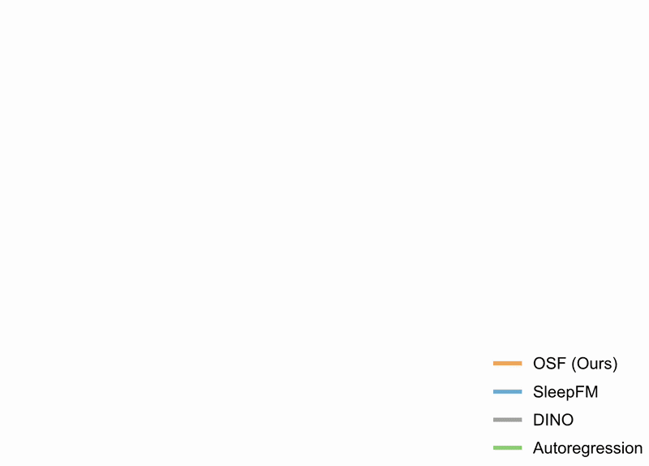
Open foundation models for sleep representation learning and transfer.
ICML 2026Learning the language of wearable sensors through large-scale sensor-text pretraining.
NeurIPS 2025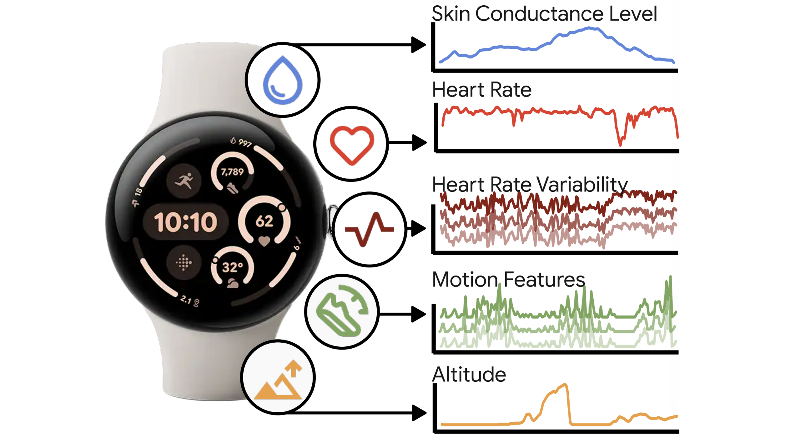
Scaling laws and generalization behavior for foundation models over wearable data.
ICLR 2025We design AI systems that reason over individual physiology, daily context, and longitudinal data to support personalized health insight. Our goal is to model individual baselines, detect meaningful deviations, forecast risk, and support personalized monitoring, intervention, coaching, and treatments.
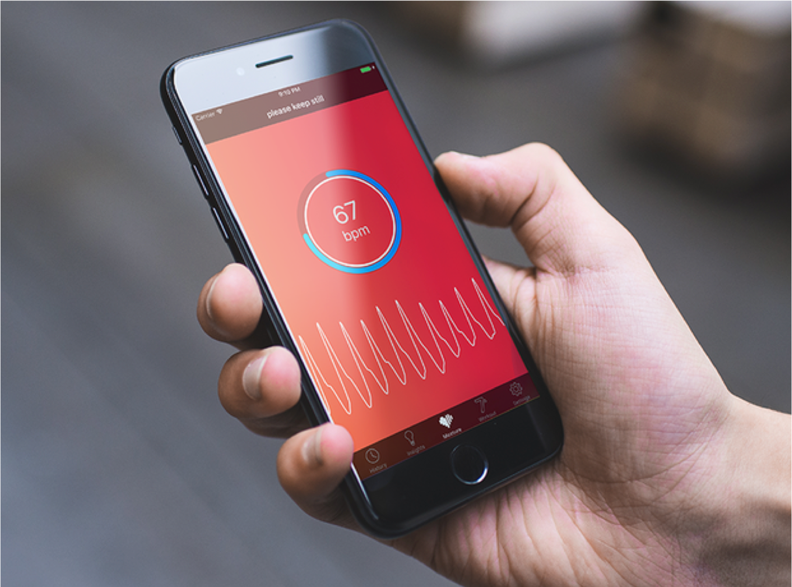
Physiological monitoring from remote visual and ambient signals.
Nature 2026
Benchmarking language-model reasoning over health time series.
ICML 2026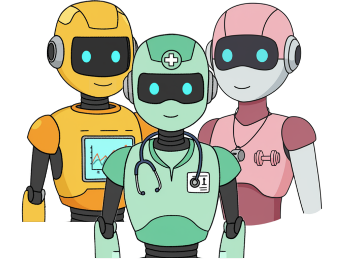
Agentic systems that organize longitudinal personal health data and reasoning.
arXiv 2025We study interactive AI systems that can move from passive prediction to active reasoning and action: reading data, using tools, checking evidence, running analyses, and interacting with researchers, clinicians, and people.
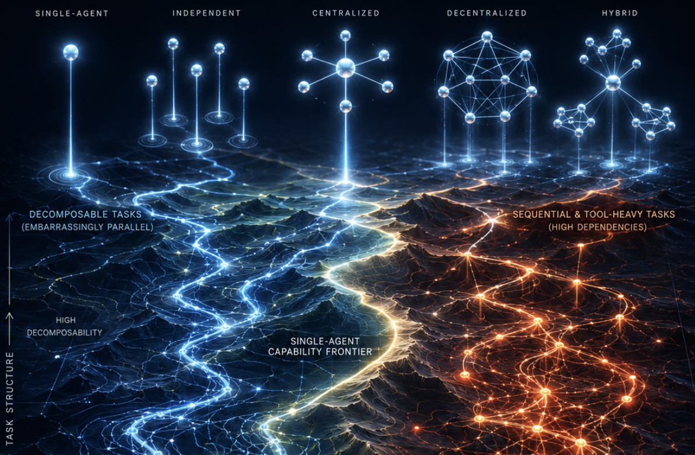
When and why agent systems improve with scale, tools, and coordination.
Nature Machine Intelligence 2026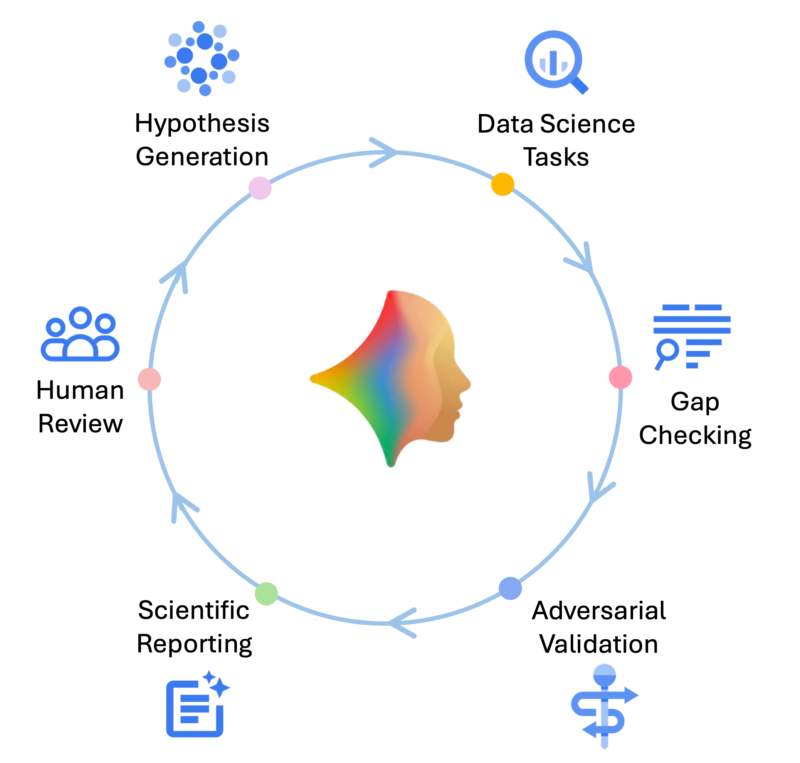
Agentic biomarker discovery from wearable sensors and health data.
arXiv 2026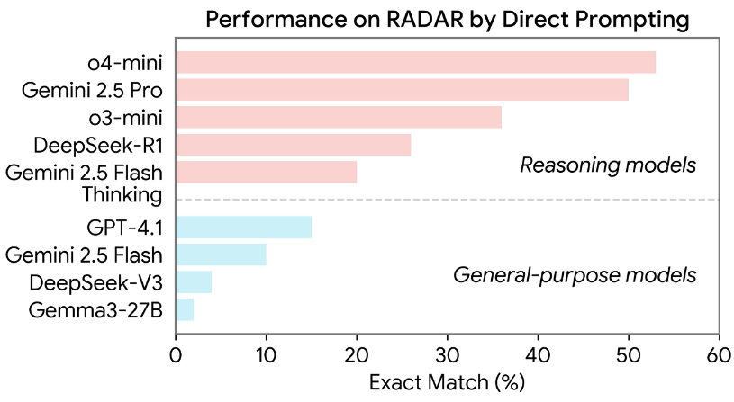
We develop generative and physical AI systems that model the structure, dynamics, and variation of human health data. Our work studies physiological rhythms, embodied signals, intervention-driven representations, and health world models to support simulation, generation, and robust health understanding.
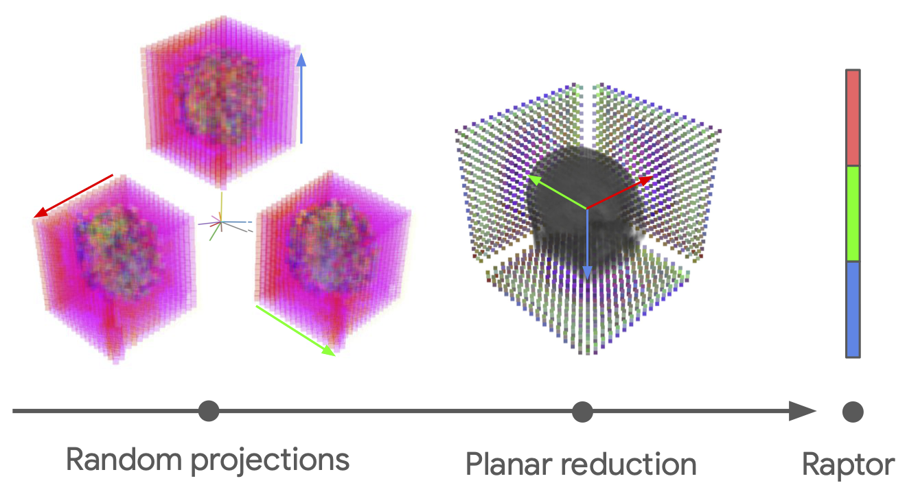
Scalable train-free embeddings for 3D medical volumes using pretrained 2D foundation models.
ICML 2025 Spotlight
Self-supervised learning for periodic targets from ubiquitous physiological sensors.
ICLR 2023 OralHealth AI must work across populations, hospitals, devices, and real-world data conditions. We study fairness, robustness, missingness, distribution shift, interpretability, and deployment-centered evaluation to make health AI more reliable and generalizable.
Understanding when clinical AI fails under real-world distribution shifts.
Nature Medicine 2024Auditing demographic bias and misdiagnosis in pathology foundation models.
Nature Medicine 2024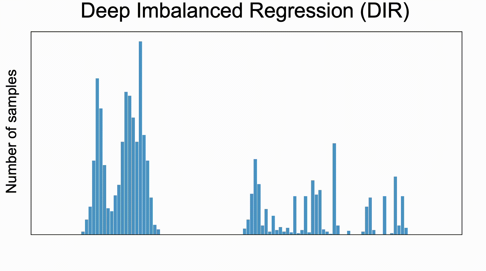
Learning continuous targets under severe label imbalance and distribution shift.
ICML 2021 Oral